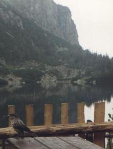
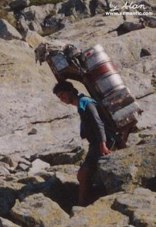
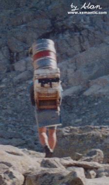
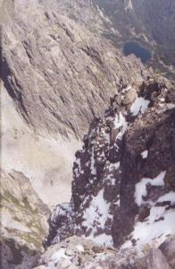

|
|
 |
|
|
|
|
czas przejścia
odcinka:
(wariant a)
1:00
czas
powrotu
odcinkiem:
(wariant a)
0:50
|
|
Do Popradzkiego Stawu (Popradské pleso) możemy dojść trzema wariantami.
Polecam osobiście na dojście wariant a, jako najszybszy i najłatwiejszy, a na powrót b,
jako najładniejszy pod kątem widoków; zaś dla nie lubiących tłoku,
ceniących spokój i ciszę najlepszy będzie wariant c.
|
|

czas przejścia odcinka:
1:00
czas powrotu odcinkiem:
0:50
|
a. od przystanku elektriczki/parkingu Popradské pleso - drogą asfaltową
Wysiadłszy z elektriczki na wysokości 1245m idziemy asfaltową, szeroką
i równą drogą równo pod górę (w kilku miejscach jedynie robi się stromiej).
Najpierw mijamy tory, potem szlaban i budynki ujęcia wody, oraz mostek na
stosunkowo niewielkim tutaj Popradzie, który zaczyna się kilkaset metrów dalej,
w miejscu gdzie na wysokości 1302m łączą się potok Krupa, wypływający z Popradzkiego Stawu,
i Potok Mięguszowiecki (Hincov Potok), biorący początek w Hińczowym Stawie.
Ponad kilometr od mostka, na wyskości ok. 1400m przechodzimy przez drugi, juz na potoku
Krupa, po czym szosa zwija się serpentyną w dwa głębokie zakręty. (Nie ścinamy
ich, postępujemy za znakowanym szlakiem!!!) Stąd ponad drzewami otwiera się widok na
Dolinę Mięguszowiecką, ograniczającą ją Grań Baszt i wspaniałe skały, na które pną się
odważnie drzewa. Można tu odpocząć, przysiadając na ławeczkach.
Za nami już ponad połowa drogi: wkrótce szosa staje się całkiem płaska,
wychodzimy na bardziej odsłoniętą przestrzeń, więc nie zasłaniane
przez drzewa oczom naszym ukazują się góry: po prawej wspaniała, pionowa
ściana Osterwy (Ostrva) - na której wypatrzeć można taterników, szczyty wokół
Doliny Mięguszowieckej, koronkową grań podwieszonej bajecznie nad nami
Doliny Złomisk. Stąd do Stawu i schroniska już tylko kilkaset metrów.
Wariant: Na 10 minut przed Popradzkim Stawem od naszej asfaltówki odchodzi w prawo
żółty szlak na Symboliczny Cmentarz Ofiar Tatr, niesamowicie piękne i
dające do myślenia miejsce. Jeżeli planujemy wracać tą samą drogą, warto jednak zostawić
sobie zwiedzenie go na powrót, jeśli wystarczy nam sił i czasu. Można będzie zwiedzić go również
gdy na powrót wybierzemy wariant b lub c.
 |
Potok Krupa w Dolinie Mięguszowieckiej, widziany z niebieskiego szlaku
fot. Pacyfka
powiększenie zdjęcia |
|
|

czas przejścia odcinka:
1:20
czas powrotu odcinkiem:
1:10
|
b. Ze Szczyrbskiego Jeziora Magistralą
Strzałki, kierujące na szlak, znajdziemy w pobliżu Jeziora
(po wyjściu ze stacji elektriczki/autobusów na wprost).
Po parunastu minutach szlak przechodzi mostem nad potokiem Młynica, opuszcza asfalt i wchodzi w las.
Droga jest szeroka i wygodna, równo wspina się pod górę. Otaczają ją wspaniałe, potężne świerki,
nastroszone brodami szarych porostów. Po półgodzinie
na wysokości 1499m mijamy drogowskaz - w prawo, w dół, odchodzi zielony szlak - wariant c.
Idziemy dalej szlakiem czerwonym - zbudowanym z dużych kamieni,
zupełnie poziomym, trawersującym zbocze doliny. Wkrótce drzewa - ogromne świerki, limby i modrzewie -
odsłonią nam widoki na leżące dużo niżej dno Doliny Mięguszowieckiej,
na położone po jej drugiej stronie Osterwę, Tępą i Wysoką. Najbardziej
niesamowite i powalające wrażenie robi zawieszona nad Doliną Mięguszowiecką
Dolina Złomisk i postrzępiona grań otaczających ją szczytów i przełęczy.
Szlak, wiodąc między kosodrzewiną, nieco się obniża, przekracza Potok Mięguszowiecki
(Hincov Potok) - z mostka można wypatrzyć pstrągi w krystalicznej wodzie - i dochodzi do asfaltówki
tuż przed Stawem i Schroniskiem.
|
|

czas przejścia odcinka:
1:30
czas powrotu odcinkiem:
1:20
|
c. od Szczyrbskiego Jeziora pół godziny Magistralą, po czym 45 minut zielonym szlakiem
Strzałki, kierujące na szlak, znajdziemy w pobliżu Jeziora
(po wyjściu ze stacji elektriczki/autobusów na wprost).
Po parunastu minutach szlak przechodzi mostem nad potokiem Młynica, opuszcza asfalt i wchodzi w las.
Droga jest szeroka i wygodna, równo wspina się pod górę. Otaczają ją wspaniałe, potężne świerki,
nastroszone brodami szarych porostów. Po półgodzinie
na wysokości 1499m osiągamy drogowskaz - w prawo, w dół, odchodzi nasz zielony szlak.
Wygodną, choć ukośną ścieżką obniżamy się na dno doliny dzikim, przepięknym lasem
- otaczają nas wspaniałe, potęne drzewa, limby i świerki. Następnie szlak
wiedzie wzdłuż Mięguszowieckiego Potoku (Hincov potok), który paręset metrów
dalej w dół łączy się z potokiem Krupa wypływającym z Popradzkiego Stawu, dając początek
wielkiej rzece Poprad, największemu z dopływów Dunajca.
Wkrótce szlak przekracza potok i zaczyna podchodzić ukośnie pod górę, aż dojdzie do
szosy. Stąd do schroniska już tylko kilkaset metrów. Możemy dojść tam
asfaltem bądź przeciąwszy go za zielonymi znakami zejść nad staw i jego brzegiem dotrzeć
do Chaty.
|
|
|
Popradzki Staw (Popradské pleso), otoczony limbami i świerkami, leży na wysokości
1494m. W jego zielonych wodach odbijają się ściany Osterwy. Hotel górski znany jako
Chata Popradské Pleso albo Chata Kapitana Morávku został nazwany tak na cześć
partyzanta walczącego w czasach drugiej wojny światowej. Budynek jest jednym
z ładnejszych schronisk w słowackich Tatrach. Polityka turystyczna wewnątrz
jest zmienna i różna każdego sezonu; w roku 1999 udostępniano tu podłogę
na poddaszu za 170 koron, co było najniższą ceną w Tatrach Wysokich; w następnym
roku zrezygnowano z tego w ogóle. Dla majętnych jest tu restauracja, bar, przed
budynkiem zaś stoły, ławki i budki handlujące wszelkim dobrem.
|
|
|
 |  |  |
Popradzki Staw. Widać schronisko i szczyt Mięguszowieckiego Wołowca
fot. Pacyfka
powiększenie zdjęcia | Popradzki Staw i zawieszona nad nim Dolina Złomisk z przełęczą Żelazne Wrota
fot. Pacyfka
powiększenie zdjęcia | Orzechówka (Nucifraga caryocatactes) na stoliku przed schroniskiem prosi o okruszki
fot. Pacyfka
powiększenie zdjęcia |
|
|
|
czas przejścia
odcinka:
0:35
czas
powrotu
odcinkiem:
0:30
czas
łączny
od początku:
1:35
czas
powrotu
do początku:
1:20
|
|
Początek szlaku - aż do rozdroża w Dolinie Mięguszowieckiej
- pokrywa się z początkiem trasy do Hińczowego Stawu i Koprowego
Wierchu, opisanej w pkt 2.2, 3.3.2
Początek szlaku znajduje się u końca asfaltówki, dochodzącej tu od przystanku
kolejki.
Znajduje się tam budka, w której prawie zawsze można znaleźć materiał
do wyniesienia do Chaty pod Rysami. Jeśli chcesz poczuć się szerpą - po słowacku:
nosičem - to możesz załadować do swego plecaka ważący około 10 kg pakunek,
a za jego przyniesienie do chaty otrzymasz herbatę z sokiem malinowym i
certyfikat nosiča. Zapłata jest symboliczna, gdyż szerpowanie jest rodzajem
uprawianego tu sportu. Czasami dla wyjątkowo ambitnych przygotowany jest
ładunek trzydziestokilowy, za którego wniesienie otrzymuje się herbatę
z rumem.
Z ustawionej na początku szlaku tabliczki dowiadujemy się o zakazie
wprowadzania psów; złamawszy ów przepis raz lub dwa razy, zostajemy ukarani
grzywną, a za trzecim razem śmiercią przez powieszenie. Ścieżka wiedzie
płaskim dnem doliny, pośród imponujących limb i wielkich kosodrzewin; możemy
oglądać wspaniałe korzenie tych roślin oplatające wielkie kamienie. ("kosodrzewiny
węowiska poobszywały głaźne ławy" - Kasprowicz). Po lewej stronie doliny
podziwiamy majestatyczne skalne ściany, pożłobione ogromnymi żlebami, u podnóży
których leżą imponujące piarżyska z ustypanych głazów. To Grań Baszt (Bášty)
z najwyższym Szatanem. Dochodzimy do rozstaju dróg, gdzie w prawo odchodzi
szlak na Rysy, a w lewo na Hińczowe Stawy i Koprowy.
|
Spotkaliśmy kiedyś w Chacie Kapitana Morawki takiego właśnie supermena,
który porwał się na zaniesienie do Chaty ogromnej kraty metalowej. Następnego
dnia trafiliśmy na niego na szlaku na Czerwoną Ławkę. "Czy macie jakiś
środek odkażający", pyta, "bo od tego szerpowania dziury mi się w plecach
porobiły, a teraz pot mi je zalewa i szczypie". "Tylko Amol" - powiedziałam
(od tego dnia pamiętałam już zawsze, żeby zabierać wodę utlenioną!). "No
to dawaj". "Ale to ma 70 procent alkoholu". "Spoko". Chłopak ściąga koszulkę,
a dziury miał straszliwe, do mięsa. "Polewaj". No to polałam. Był prawdziwym twardzielem
i cierpiał honorowo, w milczeniu, jak skaut, jak Indianin...
|
|
|  |  |
Nosič z Chaty pod Rysami z prawdziwym ładunkiem, ważącym zapewne około 70 kg.
fot. Alan |
|
|
|
czas przejścia
odcinka:
0:45
czas
powrotu
odcinkiem:
0:35
czas
łączny
od początku:
2:20
czas
powrotu
do początku:
1:55
|
|
Ścieżka staje się stromsza. W pobliżu górnej granicy kosówki znajduje
się gigantyczny głaz, który dla idących w górę jest ostatnim, a dla idących
w dół - pierwszym kiblem na szlaku. Chowając się za nim za potrzebą, należy
uważać pod nogi.
Szlak pnie się w górę trawersującymi zbocze zakosami. Zwykle w sezonie
jest tu mnóstwo ludzi, musimy się zatem uzbroić w cierpliwość. Nie ulegajmy
pokusie ścinania zakrętów, bo nie oszczędzi nam to ani czasu, ani wysiłku,
a narazi na upadek i skręcenie kończyn, a przede wszystkim rozdeptujemy
przy tym niewinne rośliny i niszczymy strukturę gleby, powodując powiększanie
się tzw. erozji turystycznej. Lepiej poprzyglądajmy się pięknym okazom
górskiej flory, których tutaj dostatek.
Po osiągnięciu progu kolejnego piętra doliny dochodzimy do Żabich
Stawów (Wielki 1921m, Mały 1919m), w wodach których odbija się
Szatan i Grań Baszt.
|
|
|
|
|
|
|
czas przejścia
odcinka:
1:00
czas
powrotu
odcinkiem:
0:40
czas
łączny
od początku:
3:20
czas
powrotu
do początku:
2:35
|
|
Wzdłuż
ścieżki zalegają ogromne głazy, roślinność jest już bardzo skromna. Czeka
nas jeszcze jeden stromszy odcinek trawersów i docieramy do najtrudniejszego
fragmentu trasy: ubezpieczonego łańcuchami uskoku, gdzie pokonanie exponowanych,
gładkich, pozbawionych chwytów skał ułatwiają nam klamry - stopnie. Jest
tu trudno z uwagi na tłok i kolejki ludzi w obu kierunkach idących, szczególnie
w przypadku gdy spadnie śnieg lub powstanie oblodzenie.
Do Schroniska już niedaleko - jeszcze tylko trochę wysiłku i wypatrzymy
po lewej na zboczu najpierw brunatnie bejcowany kibelek, a potem czerwony
dach samej Chaty.
Chata pod Rysami (Schronisko pod Wagą, słow. - Chata pod Rysmi) znajduje
się na wysokości 2250m - jest to najwyżej położone ze schronisk po obu
stronach Tatr. Otwarte od 1 czerwca do 31 października. Zimą często niszczą
je schodzące tędy lawiny. Nie istnieje tu żaden dojazd ani kolejka - wszelkie
zasoby, łącznie z kilkudziesięciokilogramowymi pojemnikami gazu lub piwa
są tu wnoszone na plecach przez ludzi zwanych nosičami.
|
Sama wizyta w kiblu jest niezwykłym przeżyciem: stoi on bowiem na krawędzi
przepaści. We wnętrzu schroniska klimat panuje niezykły. Jest to Wolne
Królestwo Rysy, miejsce przyjaźni polsko-słowackiej i w ogóle przyjaźni
między narodami. Na ścianie wisi napis "Politykować i pluć na ziemię jest
w tym miejscu zabronione!", a obok okienka wielki tasak wbity w ścianę
obok napisu - "Śmierć wegetarianom". Chcąc dowiedzieć się, czym sobie zasłużyłam
na śmierć, zapytałam w okienku, dlaczego. "Bo wegetarianie wyjadają kamzikom
(kozicom) trawę i kamziki nie mają co jeść" - objaśniła mię sympatyczna ciemnowłosa
dziewczyna.
Rysy słyną z tego, że swego czasu wchodził na nie Lenin i za komuny
było to miejsce jego kultu. Teraz kult ów jest raczej prześmiewczy: za
10 koron można pocałować raz figurkę Lenina, a na kamiennych stopniach
ścieżki wychodzącej od chaty w kierunku szczytu czerwoną farbą namalowane
są "stopy Lenina" - wielkie "ślady", przy wyższym stopniu "odbicia" rąk,
tak jakby się potknął i złapał, potem odbicie d... z napisem "tu usiadł",
w końcu miejce, gdzie upadł na pysk - z namalowanym pyskiem i wianuszkiem
czerwonych gwiazd dookoła. I sierp i młot.
Cokolwiek zjecie z proponowanych tam potraw (dużo
tańszych niż np. w Chacie Brynczalowej, do której dowozi się zaopatrzenie
samochodem - ale inny sort ludzi tam trafia) na pewno będzie wam smakował,
ale obowiązkowo należy spróbować najlepszej na świecie czekolady
gorącej z bitą śmietaną. Jest najlepsza, bo doprawiona tatrzańską przyprawą.
Tutaj można przeczytać historię o tatrzańskiej przyprawie
Załoga tego schroniska to niezwykli ludzie, którzy żyją przez pół roku
w środku gór, wykonując ciężką pracę za niewielkim wynagrodzeniem, ale
widzą w niej rodzaj sportu, sposobu na życie czy wręcz pewnego powołania.
Opowiada o tym xiążeczka, którą napisali i narysowali Jaro Švorc i Paĺo Barabáš:
"Spod krošne veselo i vážne" ("Spod nosiłek na wesoło i na poważnie" -
krošna to po słowacku nosiłki,
drewniany sprzęt zakładany na plecy, używany przez nosičów, czyli szerpów)
Można ją kupić w Chacie za 20 koron słowackich.
|
|
|
|
|
|
czas przejścia
odcinka:
0:45
czas
powrotu
odcinkiem:
0:35
czas
łączny
od początku:
4:05
czas
powrotu
do początku:
3:10
|
|
Z Chaty na Rysy jest juz naprawdę blisko, i łatwiej niż do Chaty (nie
ma takich atrakcji jak ów uskok z łańcuchami). Wychodzimy najpierw porządnie
ułożoną ścieżką na przełęcz Waga, skąd widać wspaniale Ganek i Galerię Gankową.
Dalej szlak już nie tak wygodny, ale bez drastycznej expozycji, największym
problemem jest panujący tu w sezonie tłok. Jest coraz stromiej, ale jesteśmy
już blisko. Dochodzimy ze szlakiem pod podwójny szczyt i mamy wybór: iść
na prawo na wierzchołek słowacki (2503m) lub na lewo na słowacko-polski
(2499m), uwieńczony pipantem graniczym państwa i tablicami informującymi
o istnieniu tutaj przejścia granicznego. Ten drugi czubek jest zawsze gęsto
obsadzony ludźmi, wchodzącymi od strony polskiej (tam właśnie dochodzi
szlak z Morskiego Oka, ubezpieczony łańcuchami. Z czubka słowackiego widać
pięknie profil skały i wspinających się po niej turystów).
Widok jest nieprawdopodobnie przestrzenny: widzimy szczyty bliskie
i potężne, imponujący masyw Mięguszowieckich i piękną piramidę Wysokiej,
oraz te dalsze, od Krywania po Tatry Bielskie. Z polskiego wierzchołka
widać ogromne błękitne płaszczyzny Czarnego Stawu i Morskiego Oka, po słowackiej
stronie daleko w dole widzimy oryginalne kształty Żabich Stawów. Po drugiej
stronie doliny Białej Wody jakby zawieszony na ścianie doliny unosi się
w powietrzu niewielki Litworowy Staw.
Niesamowite wrażenie robi kilkusetmetrowa przepaść - wschodnia ściana,
a pod nią, niemalże pionowo pod naszymi stopami Zmarzły Staw w Dolinie
Ciężkiej. Złudzenia skrótów perspektywicznych powodują, że Ciężki Staw
widziany u podnóża skalnej ściany wydaje się być na wyciągnięcie ręki -
a on otoczony jest kosodrzewiną, więc rozum podpowiada nam, że leży prawie
kilometr niżej niż my się znajdujemy (a mapa potwierdza, że jego wysokość
to 1611m npm). A za krawędzią progu piętra doliny, w której leży staw,
w zwariowaniej, wertykalnej perspektywie, widać czubki świerków, porastających
dno doliny Białej Wody, jeszcze trzysta metrów niżej.
|
Nazwa "Rysy" znaczy co innego po słowacku, a co innego po polsku. W
naszym języku nazwa ta - liczba mnoga od wyrazu "rysa" - wywodzona
jest od rysy, żlebu wyraźnie widocznego od polskiej strony. Natomiast po
słowacku "rysy" to liczba mnoga od wyrazu "rys", czyli ryś, drapieżny ssak
z rodziny kotów, występujący w Tatrach. Stąd ikonografia związana
z wizerunkiem rysia w Chacie pod Rysami, np. na pieczątkach.
Innym motywem stworzonym w tym humorystycznym schronisku jest
przyrównywanie do dwuszczytowej góry do dziewczyny, która
w swych kobiecych atrybutach górno-przednich również jest dwuszczytowa;)
|  |
Pod urwistą zachodnią ścianą Rysów, kilometr poniżej szczytu, leży Ciężki Staw.
fot. Pacyfka
powiększenie zdjęcia |
|
|
|
|
|
|
czas przejścia
odcinka:
0:35
czas
łączny
od początku:
4:40
|
|
Schodzenie z Rysów jest możliwe bądź na polską stronę
(wyjątkowo trudny szlak, łańcuchy i ekspozycja) -
granicę przekraczać wolno tylko w okresie od 15.06 do 31.10
- bądź tą samą drogą na stronę słowacką. Główne trudności to
strome miejsca i tłumy ludzkie.
Wracając tą samą drogą, pokonamy kolejno odcinki:
Rysy - Chata pod Rysmi
|
|
|
|
|
czas przejścia
odcinka:
1:45
czas
łączny
od początku:
6:25
|
|
Chata pod Rysmi - Popradzki Staw
|
|
|
|
|
czas przejścia
odcinka:
(wariant a)
0:50
czas
łączny
od początku:
7:15
|
|
Z Popradzkiego Stawu wracać możemy dowolną z trzech tras,
opisanych jako drogi dojścia.
|
|
czas przejścia odcinka:
0:50
|
a. do przystanku elektriczki/parkingu Popradské pleso - drogą asfaltową
|
|
czas przejścia odcinka:
1:10
|
b. do Szczyrbskiego Jeziora Magistralą
|
|
czas przejścia odcinka:
1:20
|
c. do Szczyrbskiego Jeziora 45 minut zielonym szlakiem, po czym pół godziny Magistralą
|
|
|
|
|
|
| Copyright © www.xemantic.com 2003 |


{kind=link}
{kind=link}
{kind=link}
{kind=link}
{kind=link}
{kind=link}
{kind=link}
{kind=link}
{kind=link}
{kind=link}
{kind=link}
{kind=link}
{kind=link}
{kind=link}
{kind=link}
{kind=link}
{kind=link}
{kind=link}
{kind=link}